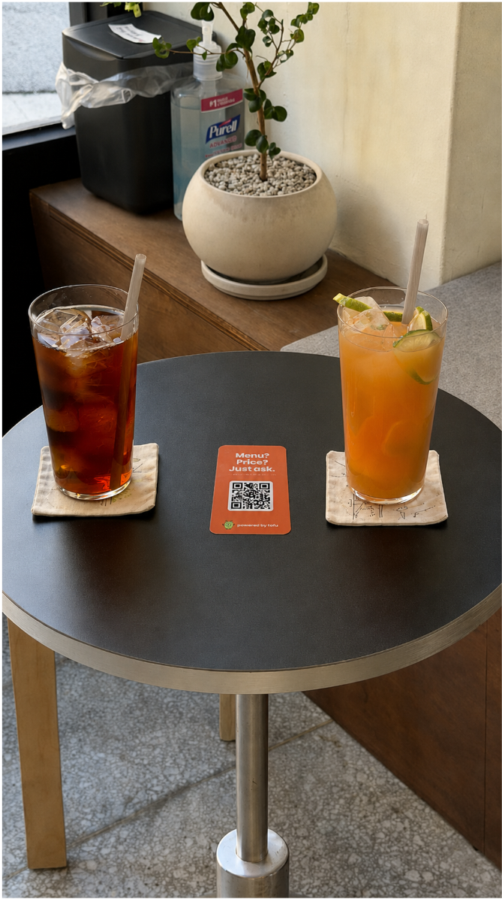
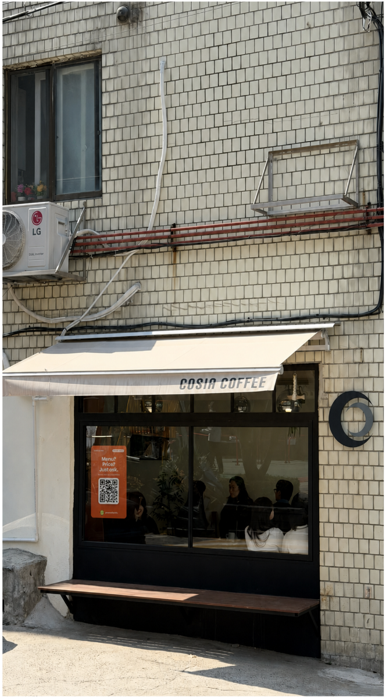
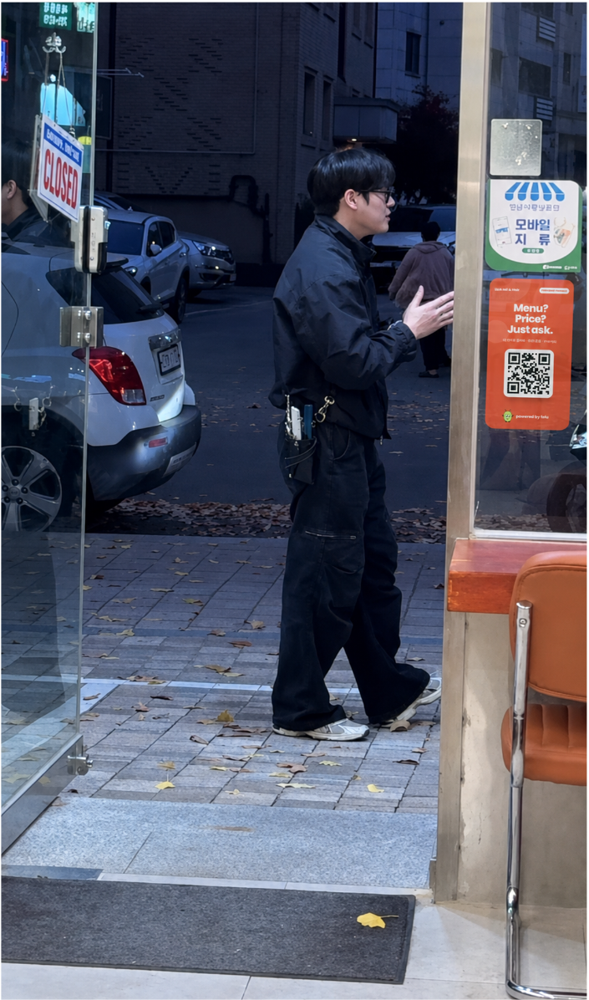

WHY FOFU
질문은 짧게. 선택은 가볍게.
가게 앞에서, 창가에서, 테이블에서.
궁금한 순간 바로 묻는 경험을 만듭니다.
SCAN
ASK
CHOOSE
HOW IT WORKS
스캔하고. 묻고. 선택하세요.
-
01
QR을 찾습니다
입구, 창가, 테이블에 놓인 FOFU를 발견합니다.
-
02
궁금한 것을 묻습니다
메뉴와 가격에 대한 질문을 편하게 입력합니다.
-
03
다음 선택으로 갑니다
망설임을 덜고 나에게 맞는 메뉴를 찾아갑니다.
FROM STREET TO TABLE
거리에서 발견하고, 자리에서 이어집니다.
FOFU IN PLACE
FOFU가 놓이는 곳.
손님의 시선이 닿는 곳이면
작은 QR 하나로 충분합니다.

테이블 위에서

창가를 지나다가

가게에 들어서며
START WITH FOFU